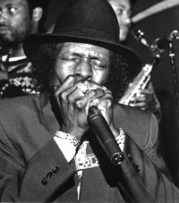
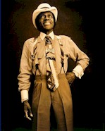

ОФИЦИАЛЬНОЕ СООБЩЕНИЕ ДЛЯ ПЕЧАТИЛегенда чикагского блюза Джуниор Веллс скончался этим вечером в возрасте 63 лет после четырех-месячного сражения с Lymphoma. Блюзмэн - это единственная его должность и звание за последние 49 лет, и в этом достиг вершин, всеобщего уважени и высшего авторитета в своем жанре. Его будут навсегда помнить за его яркий стиль в одежде, его незабываемые концертные выступления, более тридцати классических альбомов, за его уникальный стиль и мастерство игры на блюзовой гармонике, за сочиненные им песни, за его человечность. Джуниор никогда не терял контакт с многочисленными своими поклонниками и всегда находил время для автографа, урока импровизации или истории блюза. Он был необычайным человеком и с ним этот мир был лучше.
Marty Salzman

Открытки с соболезнованиями могут быть посланы семье Джуниора по следующему адресу:За новой информацией направляться по адресу http://www.juniorwells.com
Beverly Howell
Howell Productions, Inc
Hoodoo Man (388k) 
King Fish Blues (607k) 
Help Me (732k)  - выступление в клубе Buddy
Guy's Legends в ноябре 1996 г.
- выступление в клубе Buddy
Guy's Legends в ноябре 1996 г.
Stormy Monday (499k)  - 1966. На гитаре играет Buddy Guy.
- 1966. На гитаре играет Buddy Guy.
Give Me My Coat And Shoes (438k)  - 1981. Buddy Guy - гитара, вокал. Junior Wells -
губная гармоника.
- 1981. Buddy Guy - гитара, вокал. Junior Wells -
губная гармоника.